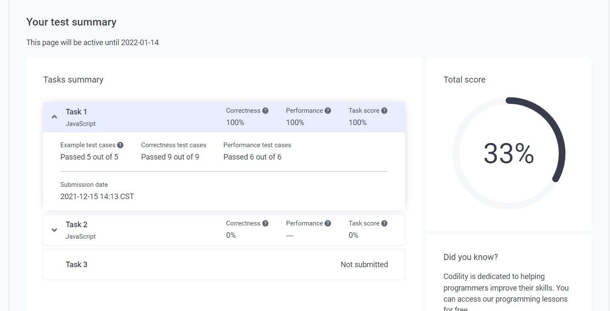

覺得明天得好好趕進度的第五天
進度
今天花了大概兩個小時的時間做了一間公司的線上測試題目，先放張圖幫自己 QQ：

（希望十年後的我會懷念弱弱的自己）
其實光第二題就卡了我大概一小時的時間。這題主要是要考用 JS 來爬 DOM 節點的能力，不過我太久沒碰所以花了很多時間，結果還是沒研究出來。
在做完測驗後，我上網做了一些研究，發現有人的做法是寫一個函式來把 DOM 節點的空白字元（文字節點）給過濾掉的方式：
1 | function cleanWhitespace(oEelement) { |
其實就是剛好看到裡面的 /\s/，再加上前幾間面試的公司剛好又考到正則表達式，就有股想要跟它做個了結的衝動，於是就又花了一個下午的時間來研究，也寫了一點筆記：
不過該做的還是要做，今天雖然進度少，但也是把 hw5 給做完了。
看過去的同學的作業學到了蠻多事情，也發現有些人的學習背景很有趣。記得有一位說他學了某個 CLI 的指令是為了偷玩電腦 XD，看來大家從小就有當駭客的潛力啊。
學到的事情
今天學到最多的就是正則表達式吧，以前都覺得那是寫給妖魔鬼怪看的東西（因為他長得很可怕）。就算知道那是一個可以幫助解題的工具，但沒有實際自己去撞過牆，就不知道為什麼要學那些新東西。像是在 正則表達式的實戰演練 中的題目，如果不用正則表達式來解題的話，也許得用很繁雜的步驟才有辦法達成。
學完後還蠻開心的，未來如果碰到類似的文字難題，我想我應該能夠好好利用這個工具，不用再像原本那樣用內建方法來處理資料。也慶幸自己有做這些筆記，就算真的忘記了也都能隨時來回溫。
現在雖然才過五天，但在這五天我寫了好多東西，也從寫東西這件事得到了一點感想。雖然不知道這跟寫東西有沒有關係，但是現在會為了想把筆記做的完整，所以在學習的時候變得很常去做範例，覺得做範例可以更加的理解一個概念。
總之，不管在學什麼新東西，直接做題目的學習效果我覺得是很有幫助的。
題外話
最近在看的書是「The power of habit」，有件事情我覺得非常的有意思。
書中提到人們會排斥自己不熟悉（不習慣）的東西，像是如果突然要你吃一個你很陌生的食物，你多半會很排斥。但是如果用你熟悉的方式來烹調這個食物，你可能就會有蠻大的機率吃下它。
有一個很經典的話是：
用舊習慣包裝新東西，大家就會比較容易接受。
有一個很特別的例子是 Outkast - Hey Ya! 這首歌。
這首歌在一開始大家都覺得很難聽（僅管某個程式的計算結果告訴電台這首歌將會爆紅），但是當電台把這首歌夾在類似的夯歌之間播放後，大家逐漸愛上了這首歌，最後還得了葛萊美獎，真的是太瞎了！
這又讓我想起，女朋友常跟我說人是個很簡單的生物這回事(っ ●ω●)っ
期許
明天想開始學下周的進度，然後邊利用時間來研究 week1 的挑戰題，希望兩件事情都可以做好 QQ。